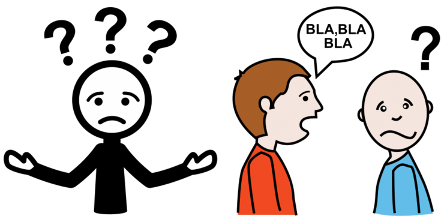
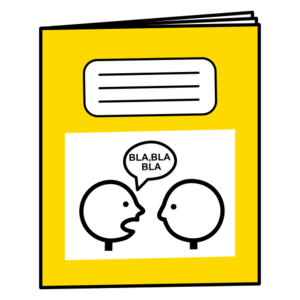
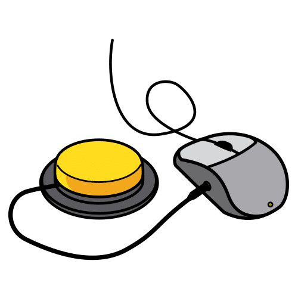
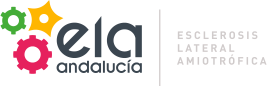

Rafael García Cabrera
Rafael García Cabrera
9 noviembre 2024 (Jaén)

Los Sistemas Aumentativos y Alternativos de Comunicación (SAAC) son formas de expresión diferentes del lenguaje hablado que tienen como objetivo aumentar el nivel de expresión (aumentativo) y/o compensar (alternativo) las dificultades de comunicación que presentan algunas personas en este área.
¿Qué son los Sistemas Aumentativos y Alternativos de Comunicación (SAAC)?
Podemos dividir los productos de apoyo para la comunicación en básicos y tecnológicos. Los tableros de comunicación son productos de apoyo básicos que consisten en superficies de materiales diversos en las que se disponen los símbolos gráficos para la comunicación (fotografías, pictogramas, letras, palabras y/o frases) que la persona indicará para comunicarse. Cuando los símbolos se distribuyen en varias páginas hablamos de libros de comunicación.
¿Qué son los Sistemas Aumentativos y Alternativos de Comunicación (SAAC)?

Para indicar los símbolos gráficos en los comunicadores, tableros y libros de comunicación existen cinco estrategias fundamentales, a saber:
Un factor determinante para una buena comunicación es el TIEMPO.
Los tiempos para la toma de turnos, han de ampliarse, lo que significa un esfuerzo importante de adaptación por parte de los interlocutores.


Slides generated from Slide Show (S9):